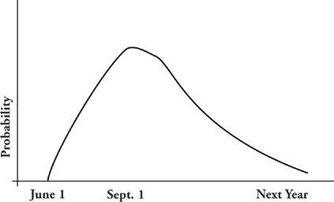
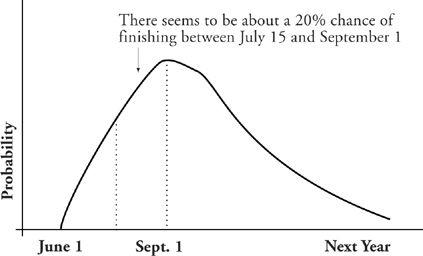
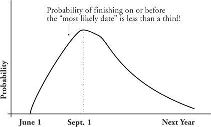

Why You Want to Do Risk Management Anyway
Suppose I came into your company to work with your key project for a few days. Suppose at the end of my stay I informed you that “the project has no chance at all of being completed before the end of May; my best bet is that it will be done September 1. Of course the worst-case scenario is a lot grimmer, say middle to end of next year.”
You knew you were uncertain about the project’s likely delivery date before you called me in. I make no bones about being uncertain either. The difference between your uncertainty and mine is that I have given you some information about precisely how uncertain I am. I can see possible delivery happening anytime over the range from June 1 to next December. I have furthermore told you something about where the delivery likelihood peaks, my best bet of when the project will be done. In graphic form, my assessment is represented by the graph on the bottom of the previous page.

This risk diagram is an explicit declaration of uncertainty. It shows the relative likelihood that completion will happen at any given time. The area under the graph between any two dates represents the likelihood that the project will complete during that period.

The scale is set so that the area under the entire graph is equal to one, the equivalent of a statement that there is a 100 percent likelihood that the project will be completed sometime between the most optimistic and the most pessimistic dates.
Risk management (the simple definition) is the explicit declaration of uncertainty. It allows you to go forth into risky territory with some assurance of just how much risk you’re running. Explicit declaration of component uncertainties—the ones that lead to possible late delivery, for example—allow you to manage a sensible risk reserve across your whole set of risks to maximize the chances of overall success.
That may seem almost trivial, but consider how projects may proceed in the absence of explicit risk declaration:
ABUSE: The statement that a project has “no chance at all of being completed before the end of May” will be interpreted to mean that June 1 is a sensible completion date. This results in selecting a date that (as the graph shows) has 0 percent chance of being met.
ABUSE: Certain more liberal managers will set the date at whatever is identified as the “most likely date,” but still find themselves finishing late almost two-thirds of the time. The diagram shows why this is: Projects, like most human endeavors, are characterized by long trail-off toward the right, so that the peak of the curve is squeezed left; the area to the left of the peak is barely a third of the total:
ABUSE: The news that the project may drag on into next year is concealed from clients and stakeholders. When this happens on one project after another, the stakeholders lose faith in all assurances about dates.

My clients often speak of the difficulty of squaring with their stakeholders: “I just can’t tell Marketing that their new product might not be ready for another nine months; they’d skin me alive, or they just wouldn’t fund the project.” But stakeholders are not an amorphous abstraction; they are people—very savvy people with long memories. When they learn that assurances about dates are empty posturing, they have no way to know what real risks they’re running. That forces them to be much more conservative, imagining the worst. The paradox here is that organizations can’t be aggressive about risk-taking without some meaningful assessment of the extent of the uncertainties. Without sensible risk management, organizations are prone to become stubbornly risk-averse.